교육자용 운영 가이드
MT4 자동매매 회원가입 및 계좌개설
회원가입부터 이메일·휴대폰 인증, KYC 승인, MT4 라이브 계좌 개설, 증거금 입금까지 순서대로 안내합니다.
회원가입
- 1
Xlence Korea 사이트 접속해주세요.
- 2
정보 입력 후 성함, 전화번호, 이메일, 비밀번호를 입력하고 계좌 개설 버튼을 클릭합니다.
성함은 신분증과 동일하게 입력해야 KYC 심사 통과가 가능합니다.
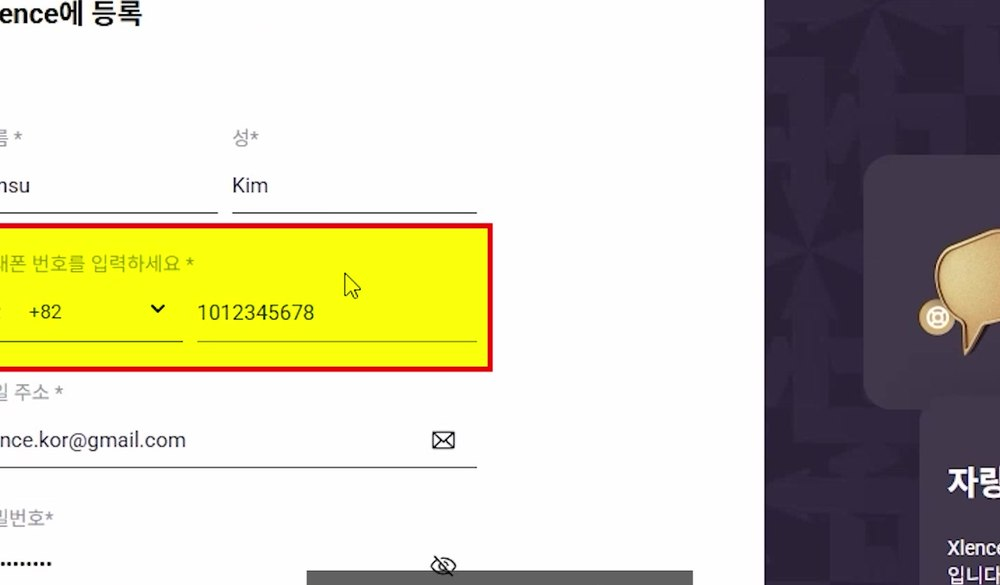
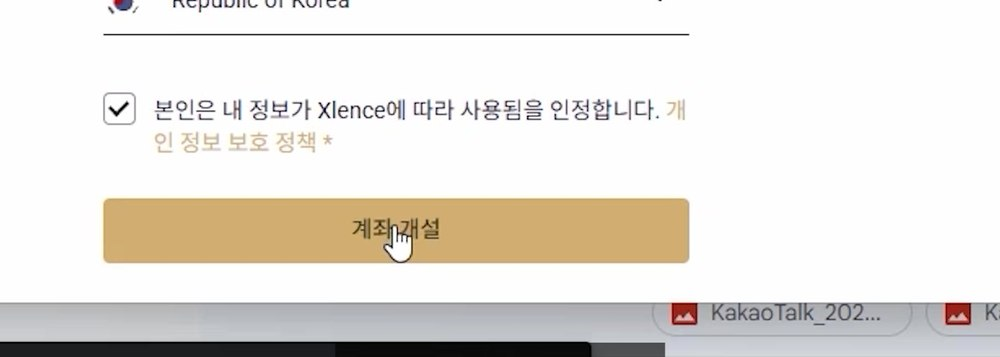
이메일 & 휴대폰 인증
- 1
Xlence에서 온 메일의 인증 버튼을 클릭합니다.
- 2
모바일 인증 팝업에서 「요청 확인」을 클릭해 인증 문자를 전송받습니다.
- 3
전송받은 6자리 인증코드를 입력한 뒤 「확인」을 클릭합니다.
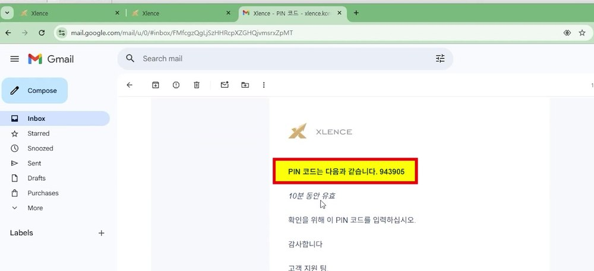
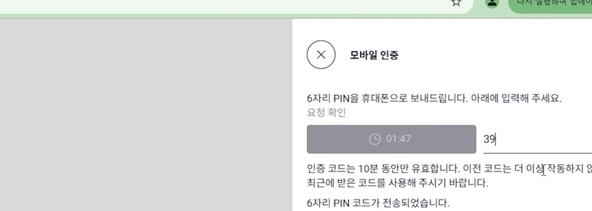
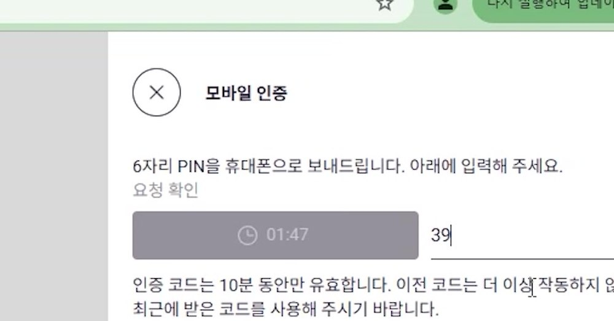
KYC 신원 인증
- 1
좌측 메뉴에서 「프로필」 → 「프로필 정보」를 클릭합니다.
- 2
영문 성함, 한글 성함, 생년월일, 성별을 신분증과 동일하게 입력합니다.
- 3
주소 세부 정보 입력 시 주소 영문 변환 후 해당 칸에 입력합니다.
- 4
재무 프로필을 입력합니다. 사진 참고 - 주석 : 본인주민번호 입력.
- 5
거래 경험을 입력합니다. 사진 참고
- 6
프로필 문서에서 신분증 사진 업로드 후 Approved 상태가 될 때까지 대기합니다.
| Xlence 주소 세부 정보 | 영문 주소 변환 |
|---|---|
| 주소 입력란 1 | Street Address |
| 주소 입력란 2 | 상세 주소 |
| 시/도 | City |
| 우편번호 | Zip/Postal Code |
| 도시/마을 | State/Province/Region |
신분증 사진이 흐리거나 빛 반사가 있으면 거절될 수 있습니다. 승인 이후 다음 단계를 진행합니다.
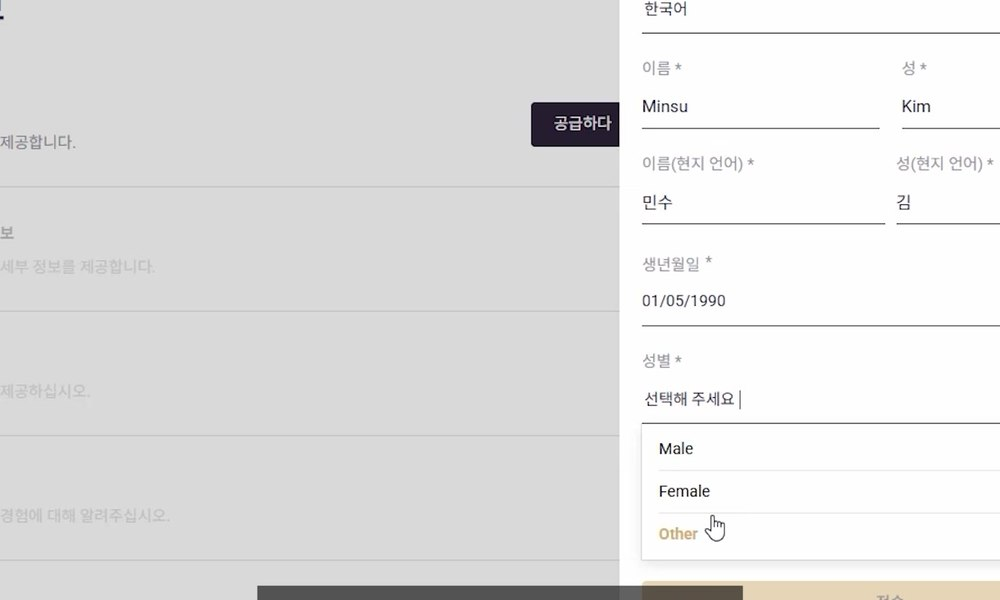
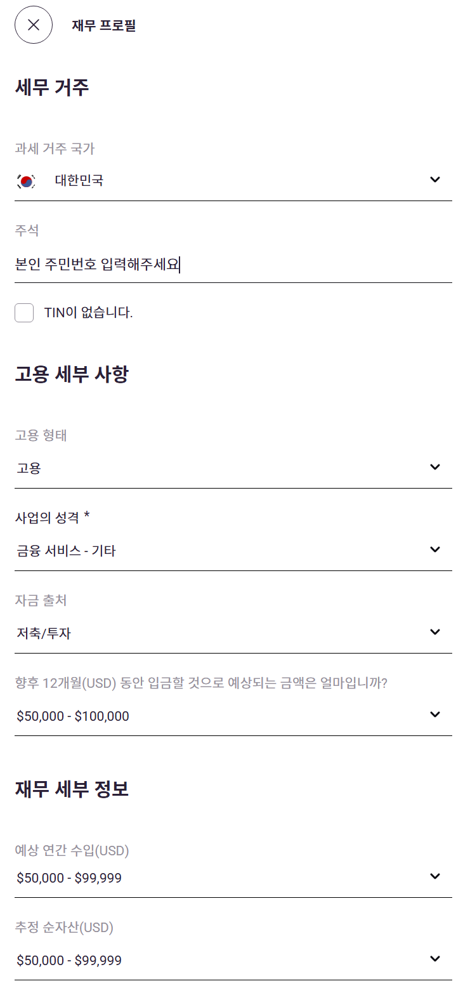
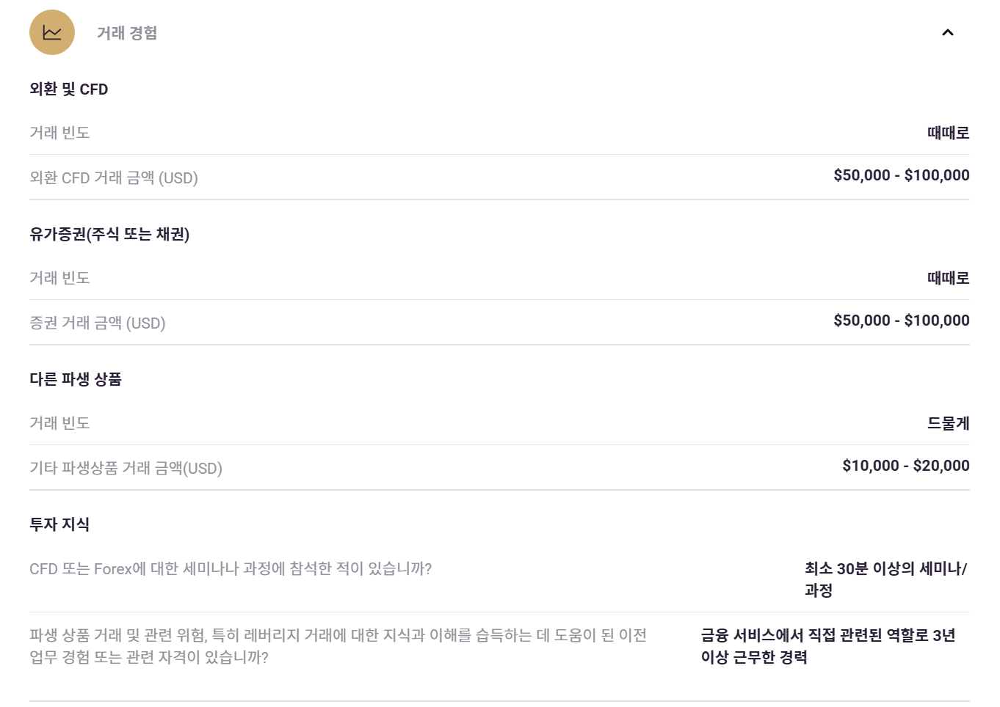
MT4 거래 계좌 개설
- 1
좌측 메뉴에서 「계정」을 클릭한 뒤 「+ 계정 추가」 → 「라이브 거래 계좌」 선택을 진행합니다.
- 2
계정 유형에서 MT4 ‘Xlence Essential’을 선택합니다.
- 3
통화 USD, 레버리지 1:1000, 비밀번호를 설정한 뒤 「계좌 만들기」를 클릭합니다.
- 4
생성된 계좌번호 · 서버명 · 비밀번호를 저장합니다.
MT5가 아닌 MT4를 선택해야 합니다.
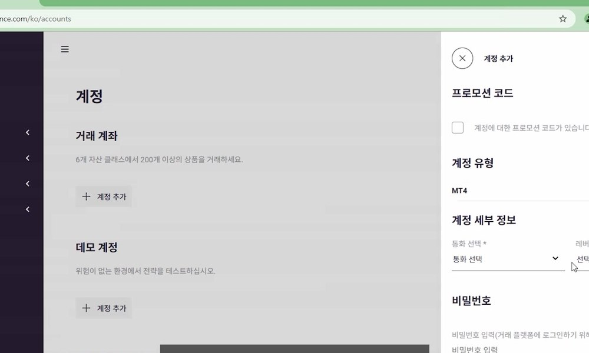
증거금 입금
- 1
포털의 「계정」 메뉴에서 생성한 계좌의 「입금하기」 버튼을 클릭합니다.
- 2
입금 방식을 선택하고 금액을 입력합니다.
- 3
완료 후 계좌 잔액이 반영됐는지 확인합니다.
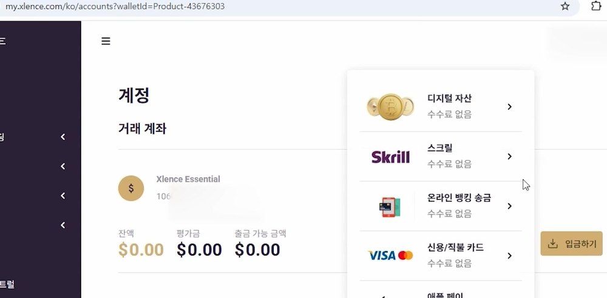
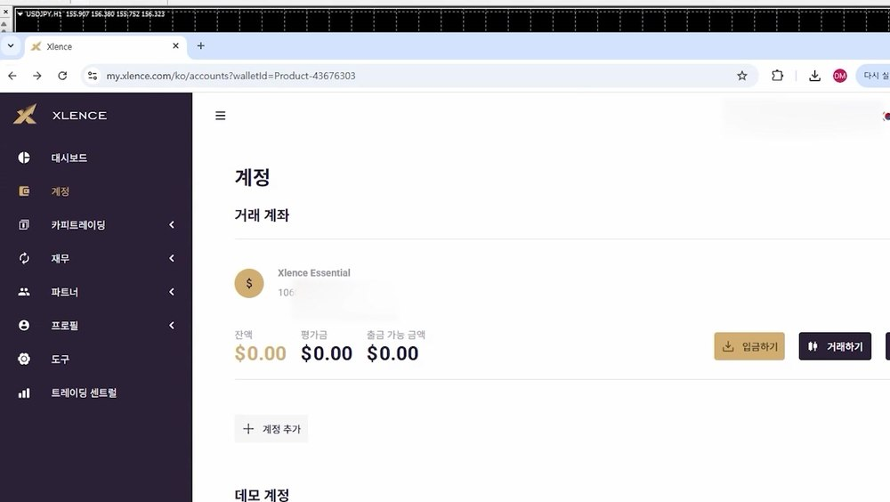
MT4 자동매매 가이드
MT4 자동매매 다운로드 및 실행
MT4 프로그램을 다운로드하고 설치한 뒤, 발급받은 거래 계좌로 로그인하는 절차입니다.
MT4 다운로드
- 1
「Windows용 MT4」로 이동하여 다운로드 후 설치합니다.
- 2
설치 과정은 기본값으로 설정하셔도 무관하며 설치 완료 후 MT4를 실행합니다.
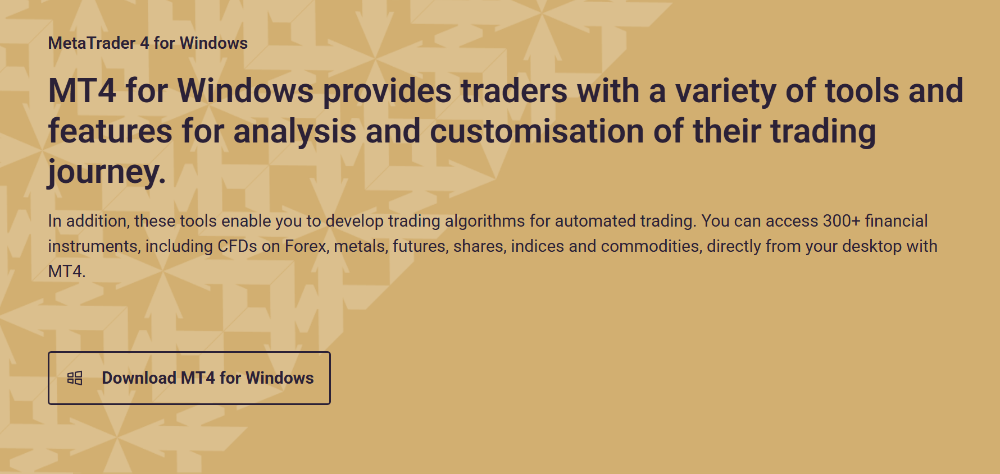
MT4 거래계좌 로그인
- 1
초기 설치 파일 다운로드가 완료되면 다음을 눌러주세요.
- 2
현재 거래 계좌를 선택한 후 로그인과 비밀번호를 입력해주세요.
로그인은 발급한 계좌번호이며 비밀번호는 계좌개설하며 지정한 비밀번호입니다.
MT4는 계좌번호와 비밀번호로 로그인하므로 혼동에 주의해주세요.
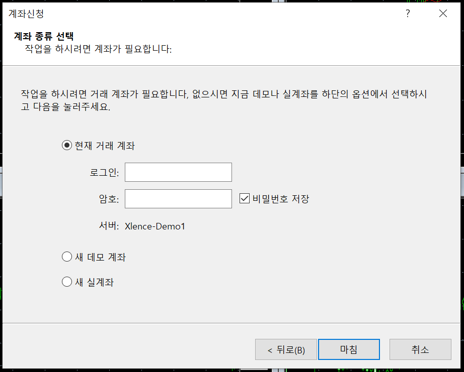